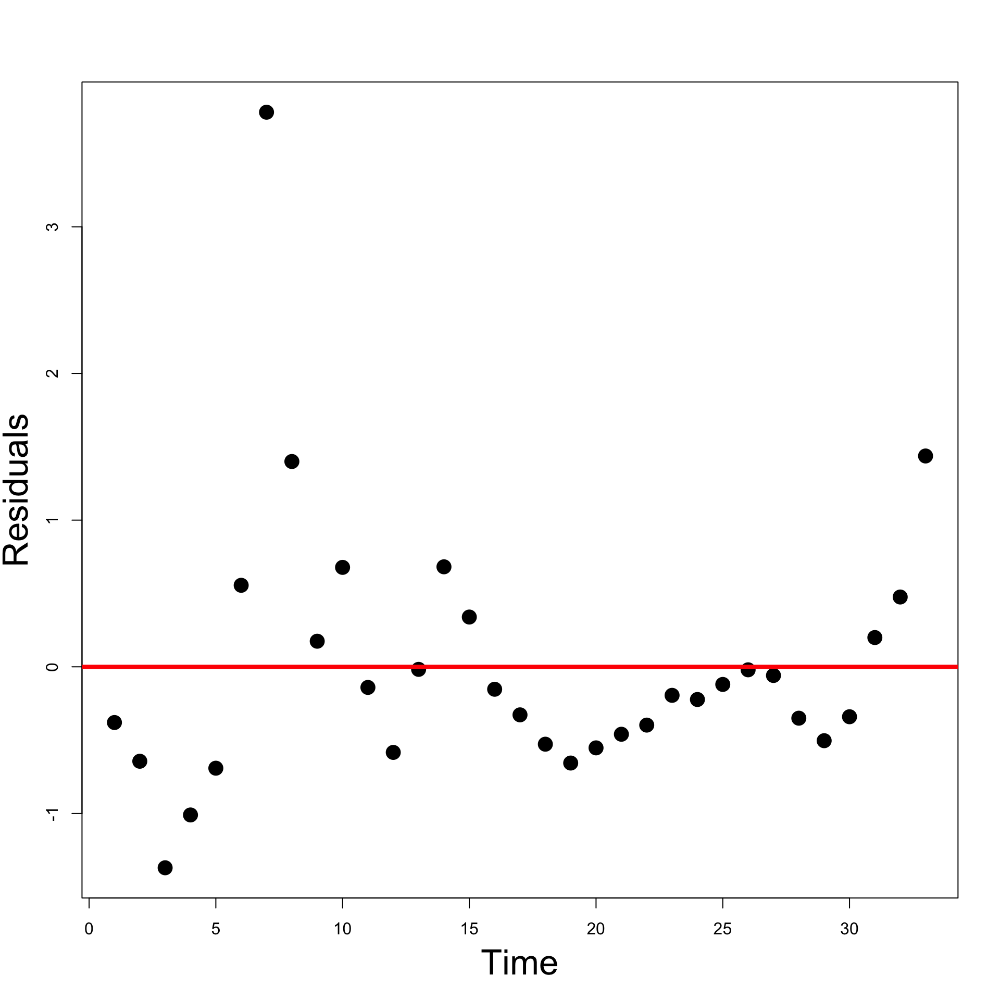
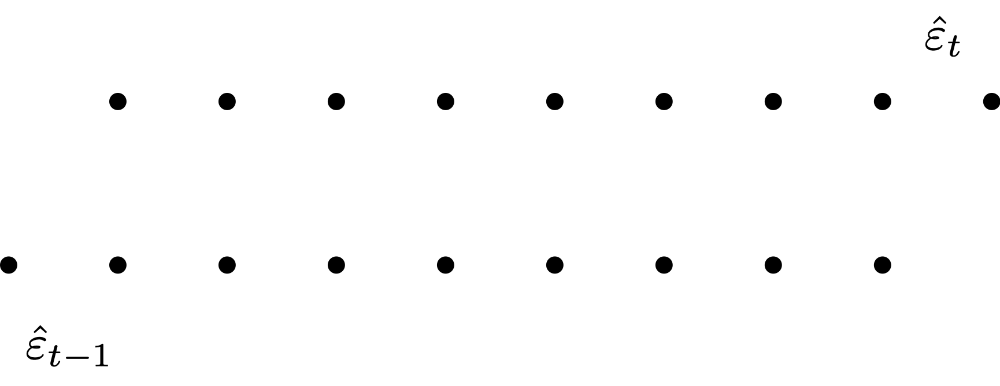
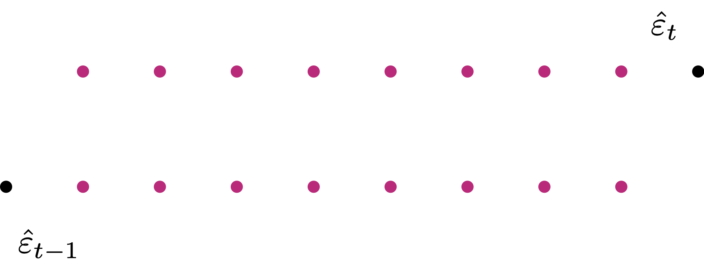
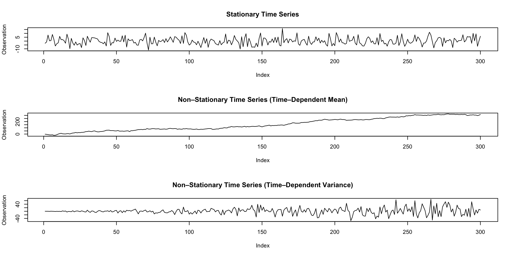
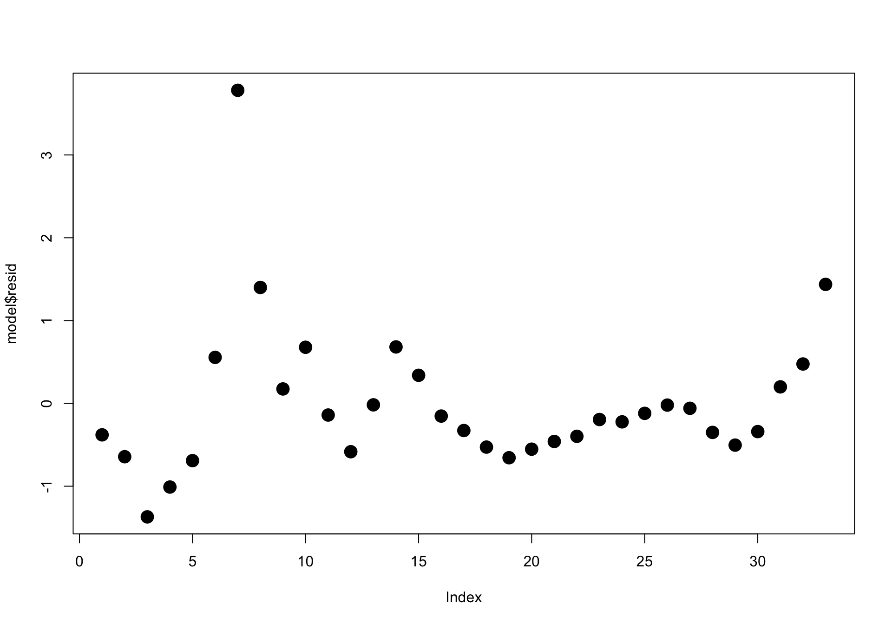
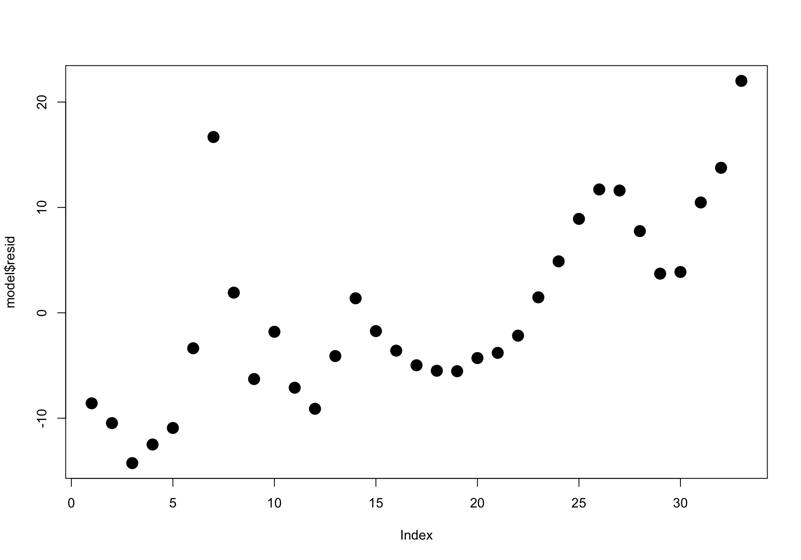
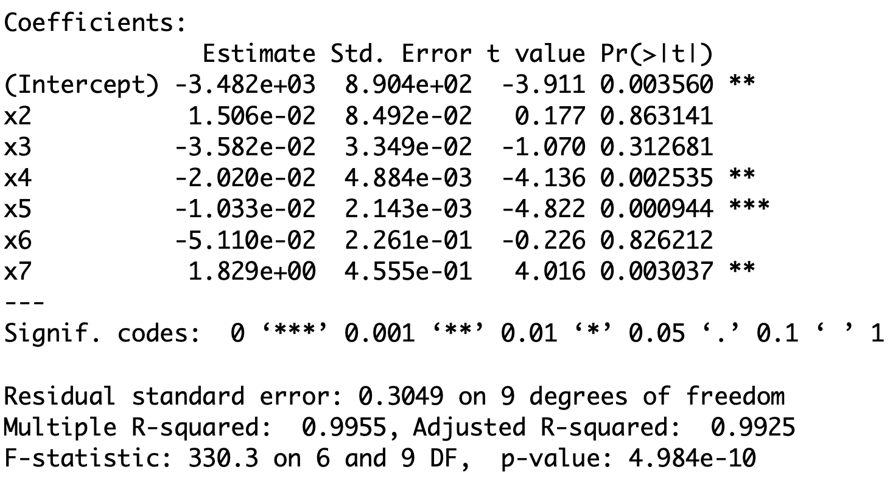
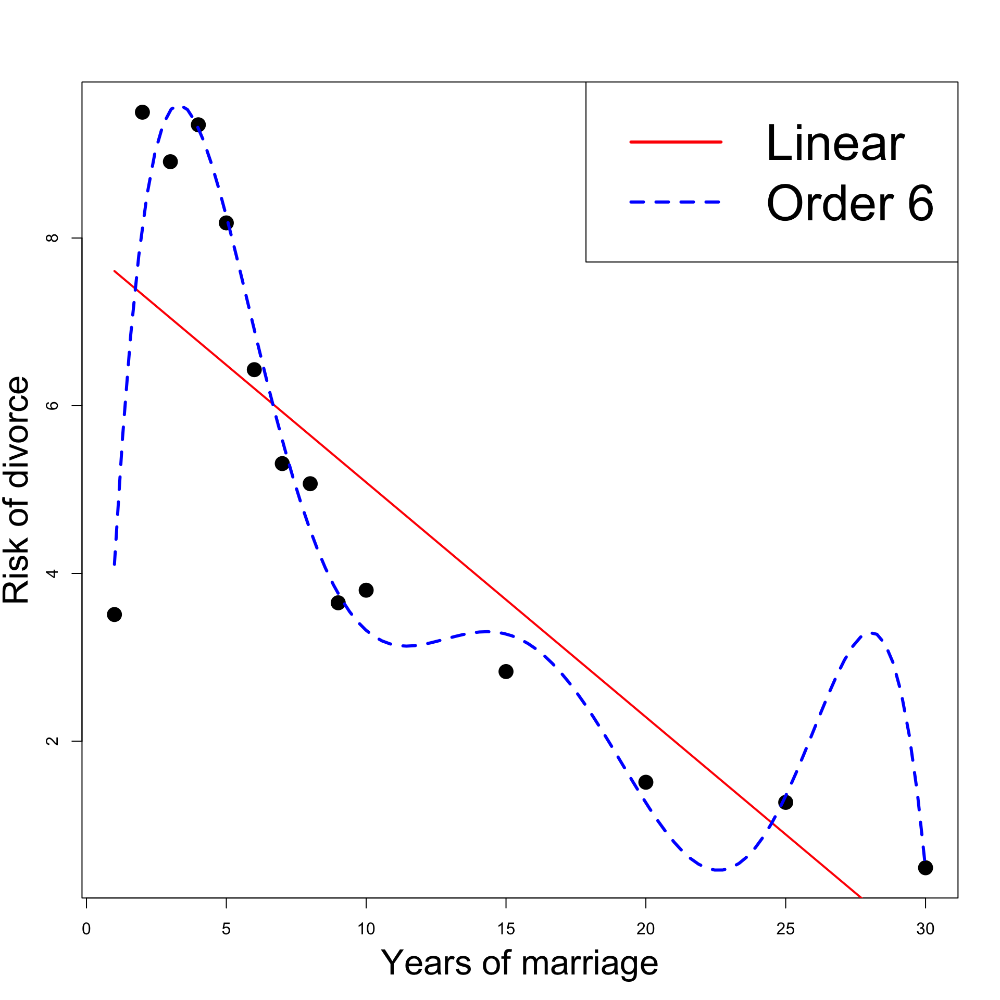
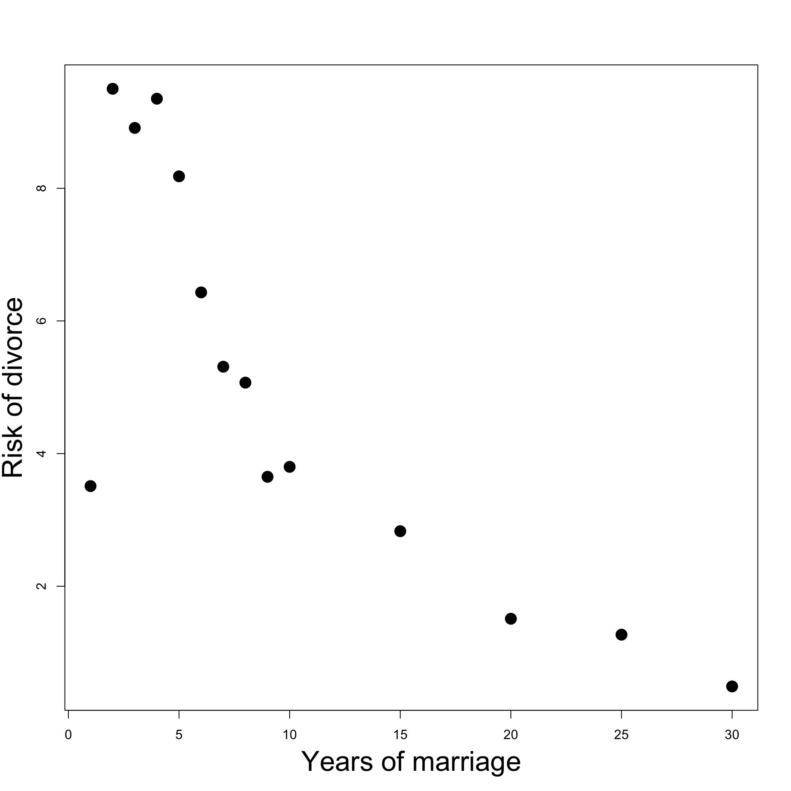

Statistical Models
Lecture 10
Lecture 10:
Regression
Assumptions II
& Stepwise Regression
Outline of Lecture 10
- Reminder: Regeression Assumptions
- Autocorrelation
- Multicollinearity
- Stepwise Regression
- Stepwise Regression and Overfitting
Part 1:
Reminder:
Regression Assumptions
Regression modelling assumptions
In Lecture 7 we have introduced the general linear regression model
Y_i = \beta_1 z_{i1} + \beta_2 z_{i2} + \ldots + \beta_p z_{ip} + \varepsilon_i
- There are p predictor random variables
Z_1 \, , \,\, \ldots \, , \, Z_p
- Y_i is the conditional distribution
Y | Z_1 = z_{i1} \,, \,\, \ldots \,, \,\, Z_p = z_{ip}
- The errors \varepsilon_i are random variables
Regression assumptions on Y_i
Predictor is known: The values z_{i1}, \ldots, z_{ip} are known
Normality: The distribution of Y_i is normal
Linear mean: There are parameters \beta_1,\ldots,\beta_p such that {\rm I\kern-.3em E}[Y_i] = \beta_1 z_{i1} + \ldots + \beta_p z_{ip}
Homoscedasticity: There is a parameter \sigma^2 such that {\rm Var}[Y_i] = \sigma^2
Independence: rv Y_1 , \ldots , Y_n are independent, and thus uncorrelated
{\rm Cor}(Y_i,Y_j) = 0 \qquad \forall \,\, i \neq j
Equivalent assumptions on \varepsilon_i
Predictor is known: The values z_{i1}, \ldots, z_{ip} are known
Normality: The distribution of \varepsilon_i is normal
Linear mean: The errors have zero mean {\rm I\kern-.3em E}[\varepsilon_i] = 0
Homoscedasticity: There is a parameter \sigma^2 such that {\rm Var}[\varepsilon_i] = \sigma^2
Independence: Errors \varepsilon_1 , \ldots , \varepsilon_n are independent, and thus uncorrelated
{\rm Cor}(\varepsilon_i, \varepsilon_j) = 0 \qquad \forall \,\, i \neq j
Extra assumption on design matrix
- The design matrix Z is such that
Z^T Z \, \text{ is invertible}
- Assumptions 1-6 allowed us to estimate the parameters
\beta = (\beta_1, \ldots, \beta_p)
- By maximizing the likelihood, we obtained the MLE
\hat \beta = (Z^T Z)^{-1} Z^T y
Violation of Regression Assumptions
We consider 3 scenarios
- Heteroscedasticity: The violation of Assumption 4 of homoscedasticity
{\rm Var}[\varepsilon_i] \neq {\rm Var}[\varepsilon_j] \qquad \text{ for some } \,\, i \neq j
- Autocorrelation: The violation of Assumption 5 of no-correlation
{\rm Cor}( \varepsilon_i, \varepsilon_j ) \neq 0 \qquad \text{ for some } \,\, i \neq j
- Multicollinearity: The violation of Assumption 6 of invertibilty of the matrix
Z^T Z
Part 2:
Autocorrelation
Autocorrelation
- The general linear regression model is
Y_i = \beta_1 z_{i1} + \beta_2 z_{i2} + \ldots + \beta_p z_{ip} + \varepsilon_i
- Consider Assumption 5
- Independence: Errors \varepsilon_1, \ldots, \varepsilon_n are independent, and thus uncorrelated {\rm Cor}(\varepsilon_i , \varepsilon_j) = 0 \qquad \forall \,\, i \neq j
- Autocorrelation: The violation of Assumption 5
{\rm Cor}(\varepsilon_i , \varepsilon_j) = 0 \qquad \text{ for some } \,\, i \neq j
Why is independence important?
Recall the methods to assess linear models
- Coefficient R^2
- t-tests for parameters significance
- F-test for model selection
The above methods rely heavily on independence
Why is independence important?
Once again, let us consider the likelihood calculation \begin{align*} L & = f(y_1, \ldots, y_n) = \prod_{i=1}^n f_{Y_i} (y_i) \\[15pts] & = \frac{1}{(2\pi \sigma^2)^{n/2}} \, \exp \left( -\frac{\sum_{i=1}^n(y_i- \hat y_i)^2}{2\sigma^2} \right) \\[15pts] & = \frac{1}{(2\pi \sigma^2)^{n/2}} \, \exp \left( -\frac{ \mathop{\mathrm{RSS}}}{2\sigma^2} \right) \end{align*}
The second equality is only possible thanks to independence of
Y_1 , \ldots, Y_n
Why is independence important?
- If we have autocorrelation then
{\rm Cor}(\varepsilon_i,\varepsilon_j) \neq 0 \quad \text{ for some } \, i \neq j
- In particualar we would have
\varepsilon_i \, \text{ and } \, \varepsilon_j \, \text{ dependent } \quad \implies \quad Y_i \, \text{ and } \, Y_j \, \text{ dependent }
- Therefore the calculation in previous slide breaks down
L \neq \frac{1}{(2\pi \sigma^2)^{n/2}} \, \exp \left( -\frac{ \mathop{\mathrm{RSS}}}{2\sigma^2} \right)
Why is independence important?
In this case \hat \beta does no longer maximize the likelihood!
As already seen, this implies that
\mathop{\mathrm{e.s.e.}}(\beta_j) \,\, \text{ is unreliable}
- Without independence, the regression maths does not work!
- t-tests for significance of \beta_j
- confidence intervals for \beta_j
- F-tests for Model Selection
- They all break down and become unreliable!
Causes of Autocorrelation
Time-series data
- Autocorrelation means that
{\rm Cor}(\varepsilon_i,\varepsilon_j) \neq 0 \quad \text{ for some } \, i \neq j
Autocorrelation if often unavoidable
Typically associated with time series data
- Observations ordered wrt time or space are usually correlated
- This is because observations taken close together may take similar values
Example: Financial data
- Autocorrelation is especially likely for datasets in
- Accounting
- Finance
- Economics
- Autocorrelation is likely if the data have been recorded over time
- E.g. daily, weekly, monthly, quarterly, yearly
- Example: Datasetet on Stock prices and Gold prices
- General linear regression model assumes uncorrelated errors
- Not realistic to assume that price observations for say 2020 and 2021 would be independent
Causes of Autocorrelation
Inertia
Economic time series tend to exhibit cyclical behaviour
Examples: GNP, price indices, production figures, employment statistics etc.
These series tend to be quite slow moving
- Effect of inertia is that successive observations are highly correlated
This is an extremely common phenomenon in financial and economic time series
Causes of Autocorrelation
Cobweb Phenomenon
Characteristic of industries in which a large amount of time passes between
- the decision to produce something
- and its arrival on the market
Cobweb phenomenon is common with agricultural commodities
Economic agents (e.g. farmers) decide
- how many goods to supply to the market
- based on previous year price
Causes of Autocorrelation
Cobweb Phenomenon
- Example: the amount of crops farmers supply to the market at time t might be
\begin{equation} \tag{3} {\rm Supply}_t = \beta_1 + \beta_2 \, {\rm Price}_{t-1} + \varepsilon_t \end{equation}
Errors \varepsilon_t in equation (3) are unlikely to be completely random and patternless
This is because
- They represent actions of intelligent economic agents (e.g. farmers)
- Price from previous year influences supply for current year
Error terms are likely to be autocorrelated
Causes of Autocorrelation
Data manipulation
Examples:
Quarterly data may smooth out the wild fluctuations in monthly sales figures
Low frequency economic survey data may be interpolated
However: Such data transformations may be inevitable
In social sciences data quality may be variable
This may induce systematic patterns and autocorrelation
No magic solution – Autocorrelation is unavoidable and must be considered
How to detect Autocorrelation
Autocorrelation is often unavoidable. We should be able to detect it:
- Graphical methods
- Simple, robust and informative
- Statistical tests
- Runs test
- Durbin-Watson test
Graphical and statistical methods can be useful cross-check of each other!
Graphical methods for Autocorrelation
- Time-series plot of residuals:
- Plot residuals \hat{\varepsilon}_t over time
- Autocorrelation plot of residuals:
- Plot residuals \hat{\varepsilon}_t against lagged residuals \hat{\varepsilon}_{t-1}
Check to see if any evidence of a systematic pattern exists:
- No Autocorrelation: Plots will look random
- Yes Autocorrelation: Plots will show certain patterns
Example: Stock Vs Gold prices
Code for this example is available here autocorrelation.R
Stock Vs Gold prices data is available here gold_stock.txt
Read data into R and fit simple regression
Time-series plot of residuals: Plot the residuals \hat{\varepsilon}_i
- Time series plot suggests some evidence for autocorrelation
- Look for successive runs of residuals either side of line y = 0 \, (see t = 15)
Autocorrelation plot of residuals:
- Want to plot \hat{\varepsilon}_t against \hat{\varepsilon}_{t-1}
- Shift \hat{\varepsilon}_t by 1 to get \hat{\varepsilon}_{t-1}
- Can only plot magenta pairs
- We have 1 pair less than the actual number of residuals


- We want to plot \hat{\varepsilon}_t against \hat{\varepsilon}_{t-1}
- Residuals \hat{\varepsilon}_t are stored in vector \,\, \texttt{residuals}
- We need to create a shifted version of \,\, \texttt{residuals}
- First compute the length of \,\, \texttt{residuals}
[1] 33- Need to generate the 33-1 pairs for plotting
- Lag 0:
- This is the original vector with no lag
- Lose one observation from \,\, \texttt{residuals} – the first observation
- Lag 1:
- This is the original vector, shifted by 1
- Lose one observation from \,\, \texttt{residuals} – the last observation
Autocorrelation plot of residuals: Plot \hat{\varepsilon}_t against \hat{\varepsilon}_{t-1}
- Plot suggests positive autocorrelation of residuals
- This means \, \hat{\varepsilon}_t \, \approx \, a + b \, \hat{\varepsilon}_{t-1} \, with b > 0
Conclusions: The dataset Gold Price vs Stock Price exhibits Autocorrelation
- Autocorrelation was detected by both graphical methods:
- Time-series of residuals
- Autocorrelation plot of residuals
- This was expected, given that the dataset represents a time-series of prices
Statistical tests for Autocorrelation
- Runs test:
- If Regression Assumptions are satisfied, the residuals are \varepsilon_i \sim N(0,\sigma^2)
- This means residuals \hat{\varepsilon}_i are equally likely to be positive or negative
- The runs test uses this observation to formulate a test for autocorrelation
- Durbin-Watson test:
- Test to see if residuals are AR(1) - Auto-regressive of order 1
- This means testing if there exists a linear relation of the form \hat{\varepsilon}_t = a + b \hat{\varepsilon}_{t-1} + u_t where u_t \sim N(0,\sigma^2) is an error term
We do not cover these tests
What to do in case of Autocorrelation?
- Consider the simple regression model
Y_i = \alpha + \beta x_i + \varepsilon_i
- Suppose that autocorrelation occurs
{\rm Cor}(\hat{\varepsilon}_i, \hat{\varepsilon}_j ) \neq 0 \quad \text{ for some } \, i \neq j
- Also, suppose that autocorrelation is Auto-Regressive of Order 1
\hat{\varepsilon}_t = a + b \, \hat{\varepsilon}_{t-1} + u_t \,, \qquad u_t \,\, \text{ iid } \,\, N(0,\sigma^2)
- Example: This is the case for dataset Stock prices Vs Gold prices
- In this case, predictions from the simple linear model are not reliable
Y_i = \alpha + \beta x_i + \varepsilon_i
Instead, substitute into the model the relation \hat{\varepsilon}_t = a + b \, \hat{\varepsilon}_{t-1} + u_t
We obtain the new linear model (up to relabelling coefficients)
Y_t = \alpha + \beta x_t + \phi \hat{\varepsilon}_{t-1} + u_t \,, \qquad u_t \,\, \text{ iid } \,\, N(0,\sigma^2)
- The above is an Autoregressive linear Model of order 1
(because time t-1 influences time t)- These models couple regression with time-series analysis (ARIMA models)
- Good reference is book by Shumway and Stoffer [1]
ARIMA Model in R
- Suppose we want to fit the model
Y = \beta_1 z_1 + \beta_2 z_2 + \ldots + \beta_n z_n + \varepsilon_i
However, suppose the residuals exhibit autocorrelation
In this case, ordinary least squares assumptions are violated
In this case, instead of regression, we need to use ARIMA models:
- ARIMA combines regression with a time series structure in the residuals
ARIMA Model in R
- Suppose we want to fit the model
Y = \beta_1 z_1 + \beta_2 z_2 + \ldots + \beta_n z_n + \varepsilon_i
- This is fitted in R as follows:
yis the given data vector;z1, ..., znthe given predictorsxregspecifies the regressors included in the modelorderspecifies the ARIMA(p, d, q) component- In our case we will use
order = c(1, 0, 0) - This corresponds to an Autoregressive Model of order 1 – abbreviated AR(1)
Example: ARIMA for Stock Vs Gold prices
Code for this example is available here arima.R
Stock Vs Gold prices data is available here gold_stock.txt
We want to fit the regression model
\texttt{gold.price} = \alpha + \beta \times (\texttt{stock.price}) + \varepsilon
We already saw that residuals are autocorrelated
Therefore we fit ARIMA model of order 1 – Abbreviated in AR(1)
Output:
Coefficients:
ar1 intercept stock.price
0.5578 3.9406 -0.0487
s.e. 0.1545 0.5675 0.0247- The fitted AR(1) model is
\begin{align*} (\texttt{gold.price})_t & = \alpha + \beta \times (\texttt{stock.price})_t + \varepsilon_t \\[1.0em] \varepsilon_t & = \phi \varepsilon_{t-1} + u_t \,, \qquad u_t \,\, \text{ iid } \,\, N(0,\sigma^2) \end{align*}
- The output gives us estimates and \mathop{\mathrm{e.s.e.}} for the 3 parameters:
| Variable | Parameter | Value | \mathop{\mathrm{e.s.e.}} |
|---|---|---|---|
ar1 |
\phi | 0.5578 | 0.1545 |
intercept |
\alpha | 3.9406 | 0.5675 |
stock.price |
\beta | -0.0487 | 0.0247 |
Output:
Coefficients:
ar1 intercept stock.price
0.5578 3.9406 -0.0487
s.e. 0.1545 0.5675 0.0247We need to check if the 3 parameters \phi,\alpha,\beta are significant
In order to do that, we need to compute the three t-statistics:
t = \frac{\text{parameter}}{\mathop{\mathrm{e.s.e.}}} \sim t_{\rm df}
- From these we can compute the corresponding p-values
p = 2 P(t_{\rm df} > |t|)
Output:
Coefficients:
ar1 intercept stock.price
0.5578 3.9406 -0.0487
s.e. 0.1545 0.5675 0.0247- The coefficients and the corresponding \mathop{\mathrm{e.s.e.}} are given in the output:
- Therefore, the three t-statistics can be computed by
3.610356 6.943789 -1.97166- Then, the p-values are:
0.001100235 1.032974e-07 0.05793185Conclusion: We fitted the AR(1) model:
\begin{align*} (\texttt{gold.price})_t & = \alpha + \beta \times (\texttt{stock.price})_t + \varepsilon_t \\[1.0em] \varepsilon_t & = \phi \varepsilon_{t-1} + u_t \,, \qquad u_t \,\, \text{ iid } \,\, N(0,\sigma^2) \end{align*}
- The estimates and p-values for the 3 parameters are:
| Parameter | \phi | \alpha | \beta |
|---|---|---|---|
| Estimate | 0.5578 | 3.9406 | -0.0487 |
| p-value | 0.001100235 | 1.032974e-07 | 0.05793185 |
The p-value for \phi is significant: \,\, p=0.001100235 < 0.05
This shows the residuals are actually autocorrelated, with relationship
\varepsilon_t = (0.001100235) \times \varepsilon_{t-1} + u_t
- Autocorrelation makes the link between real gold and stock prices harder to establish
Conclusion: We fitted the AR(1) model:
\begin{align*} (\texttt{gold.price})_t & = \alpha + \beta \times (\texttt{stock.price})_t + \varepsilon_t \\[1.0em] \varepsilon_t & = \phi \varepsilon_{t-1} + u_t \,, \qquad u_t \,\, \text{ iid } \,\, N(0,\sigma^2) \end{align*}
- The estimates and p-values for the 3 parameters are:
| Parameter | \phi | \alpha | \beta |
|---|---|---|---|
| Estimate | 0.5578 | 3.9406 | -0.0487 |
| p-value | 0.001100235 | 1.032974e-07 | 0.05793185 |
The p-value for \beta is not significant: \,\, p=0.05793185 > 0.05
However p<0.01, giving weak evidence of a relationship between stock and gold price
This means we can make predictions using the linear model
\texttt{gold.price} = 3.9406 - 0.0487 \times (\texttt{stock.price})
Conclusion: Fitting the AR(1) model gives the relationship
\begin{equation} \texttt{gold.price} = 3.9406 - 0.0487 \times (\texttt{stock.price}) \end{equation}
- Using ordinary least squares, we instead would obtain the estimates:
Coefficients:
(Intercept) stock.price
4.21285 -0.06409 - This gives the regression line
\texttt{gold.price} = 4.21285 - 0.06409 \times (\texttt{stock.price})
- However, OLS ignores autocorrelation in the residuals
Therefore the AR(1) estimate in (1) is preferred
Warning
- Consider again the linear model
y_t = \alpha + \beta x_t + \varepsilon_t
The AR(1) model assumes the residuals form a stationary time series
A time series is stationary if its behavior is consistent over time
Specifically, two properties should remain roughly constant:
- Mean – the average level does not drift
- Variance – the amount of fluctuation remains stable
Example

Example: Gold vs Stock prices
For example, let us examine the residuals \varepsilon_t from the ordinary linear model:
\texttt{gold.price} = \alpha + \beta \times \texttt{stock.price} + \varepsilon_t

The residuals form a time series that looks stationary
That makes sense – We were able to fit the AR(1) model without issues
Example: Gold vs Stock prices
Now, let us examine the residuals \varepsilon_t from the OLS regression with the variables swapped:
\texttt{stock.price} = \alpha + \beta \times \texttt{gold.price} + \varepsilon_t

The residuals show an upward trend: the series is not stationary
Consequently, fitting an AR(1) model will likely encounter problems
Example: Gold vs Stock prices
- To investigate, we attempt to fit an AR(1) model to the linear regression:
\texttt{stock.price} = \alpha + \beta \times \texttt{gold.price} + \varepsilon_t
- In R, we try to fit AR(1) with the command:
Error in arima(stock.price, xreg = gold.price, order = c(1, 0, 0)) :
non-stationary AR part from CSSAs expected, we get an error because the residuals \varepsilon_t are not stationary
This happens because the residuals \varepsilon_t are not stationary
Possible Remedy for Non-Stationarity
Differencing: common technique to make a time series stationary by eliminating trends
- The R command
diff(x)computes the difference between consecutive observations:
\text{diff}(x)_t = x_t - x_{t-1}
- This transforms a non-stationary series into a stationary one, to which we can apply AR(1)
# Fit AR(1) on differenced series
arima(diff(stock.price), xreg = diff(gold.price), order = c(1, 0, 0))Coefficients:
ar1 intercept diff(gold.price)
0.5141 1.0442 0.1632
s.e. 0.1510 0.7342 0.3879Warning: AR(1) is fitted on differences \implies coefficients not valid for original series
Part 3:
Multicollinearity
Multicollinearity
- The general linear regression model is
Y_i = \beta_1 z_{i1} + \beta_2 z_{i2} + \ldots + \beta_p z_{ip} + \varepsilon_i
- Consider Assumption 6
- The design matrix Z is such that Z^T Z \, \text{ is invertible}
- Multicollinearity: The violation of Assumption 6
\det(Z^T Z ) \, \approx \, 0 \, \quad \implies \quad Z^T Z \, \text{ is (almost) not invertible}
Causes of Multicollinearity
\text{Multicollinearity = multiple (linear) relationships between the Z-variables}
- Multicollinearity arises when there is either
- exact linear relationship amongst the Z-variables
- approximate linear relationship amongst the Z-variables
Z-variables inter-related \quad \implies \quad hard to isolate individual influence on Y
Example of Multicollinear data
- Exact collinearity for Z_1 and Z_2
- because of exact linear relation Z_2 = 5 Z_1
- Approximate collinearity for Z_1 and Z_3
- because Z_3 is small perturbation of Z_2 Z_3 \approx Z_2
| Z_1 | Z_2 | Z_3 |
|---|---|---|
| 10 | 50 | 52 |
| 15 | 75 | 75 |
| 18 | 90 | 97 |
| 24 | 120 | 129 |
| 30 | 150 | 152 |
Example of Multicollinear data
Approximate collinearity for Z_3 and Z_1 Z_3 \approx 5 Z_1
All instances qualify as multicollinearity
| Z_1 | Z_2 | Z_3 |
|---|---|---|
| 10 | 50 | 52 |
| 15 | 75 | 75 |
| 18 | 90 | 97 |
| 24 | 120 | 129 |
| 30 | 150 | 152 |
Example of Multicollinear data
- Since these relations are present, correlation is high
| Z_1 | Z_2 | Z_3 |
|---|---|---|
| 10 | 50 | 52 |
| 15 | 75 | 75 |
| 18 | 90 | 97 |
| 24 | 120 | 129 |
| 30 | 150 | 152 |
Consequences of Multicollinearity
- Therefore, multicollinearity means that
- Predictors Z_j are (approximately) linearly dependent
- E.g. one can be written as (approximate) linear combination of the others
- Recall that the design matrix is
Z = (Z_1 | Z_2 | \ldots | Z_p) = \left( \begin{array}{cccc} z_{11} & z_{12} & \ldots & z_{1p} \\ z_{21} & z_{22} & \ldots & z_{2p} \\ \ldots & \ldots & \ldots & \ldots \\ z_{n1} & z_{n2} & \ldots & z_{np} \\ \end{array} \right)
- Z has p columns. If at least one pair Z_i and Z_j is collinear (linearly dependent), then
{\rm rank} (Z) < p
- Basic linear algebra tells us that
{\rm rank} \left( Z^T Z \right) = {\rm rank} \left( Z \right)
- Therefore, if we have collinearity
{\rm rank} \left( Z^T Z \right) < p \qquad \implies \qquad Z^T Z \,\, \text{ is NOT invertible}
- In this case the least-squares estimator is not well defined
\hat{\beta} = (Z^T Z)^{-1} Z^T y
Multicollinearity is a big problem!
Example of non-invertible Z^T Z
Z_1, Z_2, Z_3 as before
Exact Multicollinearity since Z_2 = 5 Z_1
Thus Z^T Z is not invertible
Let us check with R
| Z_1 | Z_2 | Z_3 |
|---|---|---|
| 10 | 50 | 52 |
| 15 | 75 | 75 |
| 18 | 90 | 97 |
| 24 | 120 | 129 |
| 30 | 150 | 152 |
Example of non-invertible Z^T Z
R computed that \,\, {\rm det} ( Z^T Z) = -3.531172 \times 10^{-7}
Therefore the determinant of Z^T Z is almost 0
Z^T Z \text{ is not invertible!}
- If we try to invert Z^T Z in R we get an error
Error in solve.default(t(Z) %*% Z) :
system is computationally singular: reciprocal condition number = 8.25801e-19
Approximate Multicollinearity
In practice, one almost never has exact Multicollinearity
If Multicollinearity is present, it is likely to be Approximate Multicollinearity
In case of approximate Multicollinearity, it holds that
- The matrix Z^T Z can be inverted
- The estimator \hat \beta can be computed \hat \beta = (Z^T Z)^{-1} Z^T y
- However the inversion is numerically instable
Approximate Multicollinearity is still a big problem!
- Due to numerical instability, we may not be able to trust the estimator \hat \beta
Effects of numerical instability on t-tests
- Approximate Multicollinearity implies that
- Z^T Z is invertible
- The inversion is numerically instable
- Numerically instable inversion means that
\text{Small perturbations in } Z \quad \implies \quad \text{large variations in } (Z^T Z)^{-1}
- Denote by \xi_{ij} the entries of (Z^T Z)^{-1}
\text{Small perturbations in } Z \quad \implies \quad \text{large variations in } \xi_{ij}
- In particular, this might lead to larger than usual values \xi_{ij}
- Recall formula of estimated standard error for \beta_j
\mathop{\mathrm{e.s.e.}}(\beta_j) = \xi_{jj}^{1/2} \, S \,, \qquad \quad S^2 = \frac{\mathop{\mathrm{RSS}}}{n-p}
- The numbers \xi_{jj} are the diagonal entries of (Z^T Z)^{-1}
\begin{align*} \text{Multicollinearity} & \quad \implies \quad \text{Numerical instability} \\[5pts] & \quad \implies \quad \text{potentially larger } \xi_{jj} \\[5pts] & \quad \implies \quad \text{potentially larger } \mathop{\mathrm{e.s.e.}}(\beta_j) \end{align*}
- To test the null hypothesis that \beta_j = 0, we use t-statistic
t = \frac{\beta_j}{ \mathop{\mathrm{e.s.e.}}(\beta_j) }
But Multicollinearity increases the \mathop{\mathrm{e.s.e.}}(\beta_j)
Therefore, the t-statistic reduces in size:
- t-statistic will be smaller than it should
- The p-values will be large p > 0.05
Multicollinearity \implies It becomes harder to reject incorrect hypotheses!
Example of numerical instability
Z_1, Z_2, Z_3 as before
We know we have exact Multicollinearity, since Z_2 = 5 Z_1
Therefore Z^T Z is not invertible
| Z_1 | Z_2 | Z_3 |
|---|---|---|
| 10 | 50 | 52 |
| 15 | 75 | 75 |
| 18 | 90 | 97 |
| 24 | 120 | 129 |
| 30 | 150 | 152 |
Example of numerical instability
To get rid of Multicollinearity we can add a small perturbation to Z_1 Z_1 \,\, \leadsto \,\, Z_1 + 0.01
The new dataset Z_1 + 0.01, Z_2, Z_3 is
- Not anymore exactly Multicollinear
- Still approximately Multicollinear
| Z_1 | Z_2 | Z_3 |
|---|---|---|
| 10 | 50 | 52 |
| 15 | 75 | 75 |
| 18 | 90 | 97 |
| 24 | 120 | 129 |
| 30 | 150 | 152 |
Example of numerical instability
Define the new design matrix Z = (Z_1 + 0.01 | Z_2 | Z_3)
Data is approximately Multicollinear
Therefore the inverse of Z^T Z exists
Let us compute this inverse in R
| Z_1 + 0.01 | Z_2 | Z_3 |
|---|---|---|
| 10.01 | 50 | 52 |
| 15.01 | 75 | 75 |
| 18.01 | 90 | 97 |
| 24.01 | 120 | 129 |
| 30.01 | 150 | 152 |
- Let us compute the inverse of
Z = (Z_1 + 0.01 | Z_2 | Z_3)
# Consider perturbation Z1 + 0.01
PZ1 <- Z1 + 0.01
# Assemble perturbed design matrix
Z <- matrix(c(PZ1, Z2, Z3), ncol = 3)
# Compute the inverse of Z^T Z
solve ( t(Z) %*% Z ) [,1] [,2] [,3]
[1,] 17786.804216 -3556.4700048 -2.4186075
[2,] -3556.470005 711.1358432 0.4644159
[3,] -2.418608 0.4644159 0.0187805- In particular, note that the first coefficient is \,\, \xi_{11} \, \approx \, 17786
- Let us change the perturbation slightly:
\text{ consider } \, Z_1 + 0.02 \, \text{ instead of } \, Z_1 + 0.01
- Invert the new design matrix \,\, Z = (Z_1 + 0.02 | Z_2 | Z_3)
# Consider perturbation Z1 + 0.02
PZ1 <- Z1 + 0.02
# Assemble perturbed design matrix
Z <- matrix(c(PZ1, Z2, Z3), ncol = 3)
# Compute the inverse of Z^T Z
solve ( t(Z) %*% Z ) [,1] [,2] [,3]
[1,] 4446.701047 -888.8947902 -1.2093038
[2,] -888.894790 177.7098841 0.2225551
[3,] -1.209304 0.2225551 0.0187805- In particular, note that the first coefficient is \,\, \xi_{11} \, \approx \, 4446
- Summary:
- If we perturb the vector Z_1 by 0.01, the first coefficient of (Z^T Z)^{-1} is \xi_{11} \, \approx \, 17786
- If we perturb the vector Z_1 by 0.02, the first coefficient of (Z^T Z)^{-1} is \xi_{11} \, \approx \, 4446
- The average entry in Z_1 is
[1] 19.4- Therefore, the average percentage change in the data Z_1 is
\begin{align*} \text{Percentage Change} & = \left( \frac{\text{New Value} - \text{Old Value}}{\text{Old Value}} \right) \times 100\% \\[15pts] & = \left( \frac{(19.4 + 0.02) - (19.4 + 0.01)}{19.4 + 0.01} \right) \times 100 \% \ \approx \ 0.05 \% \end{align*}
- The percentage change in the coefficients \xi_{11} is
\text{Percentage Change in } \, \xi_{11} = \frac{4446 - 17786}{17786} \times 100 \% \ \approx \ −75 \%
- Conclusion: We have shown that
\text{perturbation of } \, 0.05 \% \, \text{ in the data } \quad \implies \quad \text{change of } \, - 75 \% \, \text{ in } \, \xi_{11}
- This is precisely numerical instability
\text{Small perturbations in } Z \quad \implies \quad \text{large variations in } (Z^T Z)^{-1}
Causes of Multicollinearity
- Multicollinearity is a problem
- When are we likely to encounter it?
- Possible sources of Multicollinearity are
- The data collection method employed
- Sampling over a limited range of values in the population
- Constraints on the model or population
- E.g. variables such as income and house size may be interrelated
- Model Specification
- E.g. adding polynomial terms to a model when range of X-variables is small
- An over-determined model
- Having too many X variables compared to the number of observations
- Common trends
- E.g. variables such as consumption, income, wealth, etc may be correlated due to a dependence upon general economic trends and cycles
Often can know in advance when you might experience Multicollinearity
How to detect Multicollinearity
Most important sign
Important
High R^2 values coupled with small t-statistics
This is a big sign of potential Multicollinearity
Why is this contradictory?
- High R^2 suggests model is good and explains a lot of the variation in Y
- But if individual t-statistics are small, this suggests \beta_j = 0
- Hence individual X-variables do not affect Y
Other signs of Multicollinearity
- Numerical instabilities:
- Parameter estimates \hat \beta_j become very sensitive to small changes in the data
- The \mathop{\mathrm{e.s.e.}} become very sensitive to small changes in the data
- Parameter estimates \hat \beta_j take the wrong sign or otherwise look strange
- High correlation between predictors
- Correlation can be computed in R
- Klein’s rule of thumb: Multicollinearity will be serious problem if:
- The R^2 obtained from regressing predictor variables X is greater than the overall R^2 obtained by regressing Y against all the X variables
What to do in case of Multicollinearity?
Do nothing
Multicollinearity is essentially a data-deficiency problem
Sometimes we have no control over the dataset available
Important point:
- Doing nothing should only be an option in quantitative social sciences (e.g. finance, economics) where data is often difficult to collect
- For scientific experiments (e.g. physics, chemistry) one should strive to collect good data
What to do in case of Multicollinearity?
Acquire new/more data
Multicollinearity is a sample feature
Possible that another sample involving the same variables will have less Multicollinearity
Acquiring more data might reduce severity of Multicollinearity
More data can be collected by either
- increasing the sample size or
- including additional variables
What to do in case of Multicollinearity?
Use prior information about some parameters
To do this properly would require advanced Bayesian statistical methods
This is beyond the scope of this module
What to do in case of Multicollinearity?
Rethinking the model
- Sometimes a model chosen for empirical analysis is not carefully thought out
- Some important variables may be omitted
- The functional form of the model may have been incorrectly chosen
- Sometimes using more advanced statistical techniques may be required
- Factor Analysis
- Principal Components Analysis
- Ridge Regression
- Above techniques are outside the scope of this module
What to do in case of Multicollinearity?
Transformation of variables
Multicollinearity may be reduced by transforming variables
This may be possible in various different ways
- E.g. for time-series data one might consider forming a new model by taking first differences
Further reading in Chapter 10 of [2]
What to do in case of Multicollinearity?
Dropping variables
Simplest approach to tackle Multicollinearity is to drop one or more of the collinear variables
Goal: Find the best combination of X variables which reduces Multicollinearity
We present 2 alternatives
- Dropping variables by hand
- Dropping variables using Stepwise regression (next Part)
Example: Expenditure Vs Income, Wealth
- Explain expenditure Y in terms of
- income X_2
- wealth X_3
- It is intuitively clear that income and wealth are highly correlated
To detect Multicollinearity, look out for
- High R^2 value
- coupled with low t-values
| Expenditure Y | Income X_2 | Wealth X_3 |
|---|---|---|
| 70 | 80 | 810 |
| 65 | 100 | 1009 |
| 90 | 120 | 1273 |
| 95 | 140 | 1425 |
| 110 | 160 | 1633 |
| 115 | 180 | 1876 |
| 120 | 200 | 2052 |
| 140 | 220 | 2201 |
| 155 | 240 | 2435 |
| 150 | 260 | 2686 |
Fit the regression model in R
- Code for this example is available here multicollinearity.R
# Enter data
y <- c(70, 65, 90, 95, 110, 115, 120, 140, 155, 150)
x2 <- c(80, 100, 120, 140, 160, 180, 200, 220, 240, 260)
x3 <- c(810, 1009, 1273, 1425, 1633, 1876, 2052, 2201, 2435, 2686)
# Fit model
model <- lm(y ~ x2 + x3)
# We want to display only part of summary
# First capture the output into a vector
temp <- capture.output(summary(model))
# Then print only the lines of interest
cat(paste(temp[9:20], collapse = "\n"))Coefficients:
Estimate Std. Error t value Pr(>|t|)
(Intercept) 24.77473 6.75250 3.669 0.00798 **
x2 0.94154 0.82290 1.144 0.29016
x3 -0.04243 0.08066 -0.526 0.61509
---
Signif. codes: 0 '***' 0.001 '**' 0.01 '*' 0.05 '.' 0.1 ' ' 1
Residual standard error: 6.808 on 7 degrees of freedom
Multiple R-squared: 0.9635, Adjusted R-squared: 0.9531
F-statistic: 92.4 on 2 and 7 DF, p-value: 9.286e-06Three basic statistics
- R^2 coefficient
- t-statistics and related p-values
- F-statistic and related p-value
Coefficients:
Estimate Std. Error t value Pr(>|t|)
(Intercept) 24.77473 6.75250 3.669 0.00798 **
x2 0.94154 0.82290 1.144 0.29016
x3 -0.04243 0.08066 -0.526 0.61509
---
Signif. codes: 0 '***' 0.001 '**' 0.01 '*' 0.05 '.' 0.1 ' ' 1
Residual standard error: 6.808 on 7 degrees of freedom
Multiple R-squared: 0.9635, Adjusted R-squared: 0.9531
F-statistic: 92.4 on 2 and 7 DF, p-value: 9.286e-06- R^2 = 0.9635
- Model explains a substantial amount of the variation (96.35%) in the data
Coefficients:
Estimate Std. Error t value Pr(>|t|)
(Intercept) 24.77473 6.75250 3.669 0.00798 **
x2 0.94154 0.82290 1.144 0.29016
x3 -0.04243 0.08066 -0.526 0.61509
---
Signif. codes: 0 '***' 0.001 '**' 0.01 '*' 0.05 '.' 0.1 ' ' 1
Residual standard error: 6.808 on 7 degrees of freedom
Multiple R-squared: 0.9635, Adjusted R-squared: 0.9531
F-statistic: 92.4 on 2 and 7 DF, p-value: 9.286e-06- F-statistic is F = 92.4
- Corresponding p-value is p = 9.286 \times 10^{-6} <0.05
- Evidence that at least one between Income and Wealth affect Expenditure
Coefficients:
Estimate Std. Error t value Pr(>|t|)
(Intercept) 24.77473 6.75250 3.669 0.00798 **
x2 0.94154 0.82290 1.144 0.29016
x3 -0.04243 0.08066 -0.526 0.61509
---
Signif. codes: 0 '***' 0.001 '**' 0.01 '*' 0.05 '.' 0.1 ' ' 1
Residual standard error: 6.808 on 7 degrees of freedom
Multiple R-squared: 0.9635, Adjusted R-squared: 0.9531
F-statistic: 92.4 on 2 and 7 DF, p-value: 9.286e-06- t-statistics:
- t-statistics for Income is t = 1.144; Corresponding p-value is p = 0.29016
- t-statistic for Wealth is t = -0.526; Corresponding p-value is p = 0.61509
- Both p-values are p > 0.05 \implies regression parameters are \beta_2 = \beta_3 = 0
- Therefore, neither Income nor Wealth affect Expenditure
The output looks strange
Main red flag for Multicollinearity:
- High R^2 value coupled with low t-values (corresponding to high p-values)
There are many contradictions:
High R^2 value suggests model is really good
However, low t-values imply neither Income nor Wealth affect Expenditure
F-statistic is high \implies at least one between Income or Wealth affect Expenditure
The Wealth estimator has the wrong sign (\hat \beta_3 < 0). This makes no sense:
- it is likely that Expenditure will increase as Wealth increases
- therefore, we would expect \, \hat \beta_3 > 0
Multicollinearity is definitely present!
Further confirmation
Method 1: Computing the correlation:
- Compute correlation of X_2 and X_3
[1] 0.9989624- Correlation is almost 1: Variables X_2 and X_3 are very highly correlated
This once again confirms Multicollinearity is present
Conclusion: The variables Income and Wealth are highly correlated
- Impossible to isolate individual impact of either Income or Wealth upon Expenditure
Method 2: Klein’s rule of thumb: Multicollinearity will be a serious problem if:
- The R^2 obtained from regressing predictor variables X is greater than the overall R^2 obtained by regressing Y against all the X variables
In the Expenditure vs Income and Wealth dataset we have:
Regressing Y against X_2 and X_3 gives R^2=0.9635
Regressing X_2 against X_3 gives R^2 = 0.9979
Klein’s rule of thumb suggests that Multicollinearity will be a serious problem
Addressing multicollinearity
The variables Income and Wealth are highly correlated
Intuitively, we expect both Income and Wealth to affect Expenditure
Solution can be to drop either Income or Wealth variables
- We can then fit 2 separate models
Expenditure Vs Income
Coefficients:
Estimate Std. Error t value Pr(>|t|)
(Intercept) 24.45455 6.41382 3.813 0.00514 **
x2 0.50909 0.03574 14.243 5.75e-07 ***
---
Signif. codes: 0 '***' 0.001 '**' 0.01 '*' 0.05 '.' 0.1 ' ' 1
Residual standard error: 6.493 on 8 degrees of freedom
Multiple R-squared: 0.9621, Adjusted R-squared: 0.9573
F-statistic: 202.9 on 1 and 8 DF, p-value: 5.753e-07- R^ 2 = 0.9621 which is quite high
- p-value for \beta_2 is p = 9.8 \times 10^{-7} < 0.05 \quad \implies \quad Income variable is significant
- Estimate is \hat \beta_2 = 0.50909 > 0
Strong evidence that Expenditure increases as Income increases
Expenditure Vs Wealth
Coefficients:
Estimate Std. Error t value Pr(>|t|)
(Intercept) 24.411045 6.874097 3.551 0.0075 **
x3 0.049764 0.003744 13.292 9.8e-07 ***
---
Signif. codes: 0 '***' 0.001 '**' 0.01 '*' 0.05 '.' 0.1 ' ' 1
Residual standard error: 6.938 on 8 degrees of freedom
Multiple R-squared: 0.9567, Adjusted R-squared: 0.9513
F-statistic: 176.7 on 1 and 8 DF, p-value: 9.802e-07- R^ 2 = 0.9567 which is quite high
- p-value for \beta_2 is p = 9.8 \times 10^{-7} < 0.05 \quad \implies \quad Wealth variable is significant
- Estimate is \hat \beta_2 = 0.049764 > 0
Strong evidence that Expenditure increases as Wealth increases
Example: Conclusion
First, we fitted the model
\text{Expenditure} = \beta_1 + \beta_2 \times \text{Wealth} + \beta_3 \times \text{Income} + \varepsilon
- We saw that the model performs poorly due to multicollinearity
- High R^2 coupled with non-significant variables Income and Wealth
- Income and Wealth are highly correlated
- To address multicollinearity, we dropped variables and fitted simpler models
- Expenditure vs Income
- Expenditure vs Wealth
- Both models perform really well
- Expenditure increases as either Income or Wealth increase
- Multicollinearity effects disappeared after dropping either variable!
Part 4:
Stepwise Regression
Stepwise regression
Method for comparing regression models
Involves iterative selection of predictor variables X to use in the model
It can be achieved through
- Forward selection
- Backward selection
- Stepwise selection: Combination of Forward and Backward selection
Stepwise regression methods
- Forward Selection: Start with the null model with only intercept
Y = \beta_1 + \varepsilon
- Add each variable X_j incrementally, testing for significance
- Stop when no more variables are statistically significant
Note: Significance criterion for X_j is in terms of AIC
- AIC is a measure of how well a model fits the data
- AIC is an alternative to the coefficient of determination R^2
- We will give details about AIC later
- Backward Selection: Start with the full model
Y = \beta_1 + \beta_2 X_{2}+ \ldots+\beta_p X_{p}+ \varepsilon
- Delete X_j variables which are not significant
- Stop when all the remaining variables are significant
- Stepwise Selection: Start with the null model
Y = \beta_1 + \varepsilon
- Add each variable X_j incrementally, testing for significance
- Each time a new variable X_j is added, perform a Backward Selection step
- Stop when all the remaining variables are significant
Note: Stepwise Selection ensures that at each step all the variables are significant
Stepwise regression in R
- Suppose given
- a data vector \, \texttt{y}
- predictors data \, \texttt{x2}, \texttt{x3}, \ldots, \texttt{xp}
- Begin by fitting the null and full regression models
# Fit the null model
null.model <- lm(y ~ 1)
# Fit the full model
full.model <- lm(y ~ x2 + x3 + ... + xp)Forward selection or Stepwise selection: Start with null model
Backward selection: Start with full model
# Stepwise selection
best.model <- step(null.model,
direction = "both",
scope = formula(full.model))
# Forward selection
best.model <- step(null.model,
direction = "forward",
scope = formula(full.model))
# Backward selection
best.model <- step(full.model,
direction = "backward")- The model selected by Stepwise regression is saved in
- \texttt{best.model}
- To find out which model was selected, print the summary and read first 2 lines
Example: Longley dataset
GNP.deflator GNP Unemployed Armed.Forces Population Year Employed
1947 83.0 234.289 235.6 159.0 107.608 1947 60.323
1948 88.5 259.426 232.5 145.6 108.632 1948 61.122
1949 88.2 258.054 368.2 161.6 109.773 1949 60.171Goal: Explain the number of Employed people Y in the US in terms of
- X_2 GNP deflator to adjust GNP for inflation
- X_3 GNP Gross National Product
- X_4 number of Unemployed
- X_5 number of people in the Armed Forces
- X_6 non-institutionalised Population \geq age 14 (not in care of insitutions)
- X_7 Years from 1947 to 1962
Reading in the data
Code for this example is available here longley_stepwise.R
Longley dataset available here longley.txt
Download the data file and place it in current working directory
# Read data file
longley <- read.table(file = "longley.txt", header = TRUE)
# Store columns in vectors
x2 <- longley[ , 1] # GNP Deflator
x3 <- longley[ , 2] # GNP
x4 <- longley[ , 3] # Unemployed
x5 <- longley[ , 4] # Armed Forces
x6 <- longley[ , 5] # Population
x7 <- longley[ , 6] # Year
y <- longley[ , 7] # EmployedFitting the Full Model
Fit the multiple regression model, including all predictors
Y = \beta_1 + \beta_2 \, X_2 + \beta_3 \, X_3 + \beta_4 \, X_4 + \beta_5 \, X_5 + \beta_6 \, X_6 + \beta_7 \, X_7 + \varepsilon

- Fitting the full model gives:
- Extremely high R^2 value
- Low t-values (and high p-values) for X_2, X_3 and X_6
- These are signs that we might have a problem with Multicollinearity
- To further confirm Multicollinearity, we can look at the correlation matrix
- We can use function \, \texttt{cor} directly on first 6 columns of data-frame \,\texttt{longley}
- We look only at correlations larger than 0.9
GNP.deflator GNP Unemployed Armed.Forces Population Year
GNP.deflator TRUE TRUE FALSE FALSE TRUE TRUE
GNP TRUE TRUE FALSE FALSE TRUE TRUE
Unemployed FALSE FALSE TRUE FALSE FALSE FALSE
Armed.Forces FALSE FALSE FALSE TRUE FALSE FALSE
Population TRUE TRUE FALSE FALSE TRUE TRUE
Year TRUE TRUE FALSE FALSE TRUE TRUE- We see that the following pairs are highly correlated (correlation \, > 0.9) (X_2, X_3)\,, \quad (X_2, X_6)\,, \quad (X_2, X_7)\,, \quad (X_3, X_6)\,, \quad (X_3, X_7)\,, \quad (X_6, X_7)
Applying Stepwise regression
- Goal: Want to find best variables which, at the same time
- Explain Employment variable Y
- Reduce Multicollinearity
- Method: We use Stepwise regression
- Start by by fitting the null and full regression models
- Perform Stepwise regression by
- Forward selection
- Backward selection
- Stepwise selection
- Models obtained by Stepwise regression are stored in
- \texttt{best.model.1}, \,\, \texttt{best.model.3}, \,\,\texttt{best.model.3}
- Print the summary for each model obtained
- Output: The 3 methods all yield the same model
Interpretation
- All three Stepwise regression methods agree:
- X_3, X_4, X_5, X_7 are selected
- X_2, X_6 are excluded
- Recall: When fitting the full model, non-significant variables are X_2, X_3, X_6
- Stepwise regression drops X_2, X_6, and keeps X_3
- Explanation: Multicollinearity between X-variables means there is redundancy
- X_2 and X_6 are not needed in the model
- This means that the number Employed just depends on
- X_3 GNP
- X_4 Number of Unemployed people
- X_5 Number of people in the Armed Forces
- X_7 Time in Years
Re-fitting the model without X_2 and X_6
Coefficients:
Estimate Std. Error t value Pr(>|t|)
(Intercept) -3.599e+03 7.406e+02 -4.859 0.000503 ***
x3 -4.019e-02 1.647e-02 -2.440 0.032833 *
x4 -2.088e-02 2.900e-03 -7.202 1.75e-05 ***
x5 -1.015e-02 1.837e-03 -5.522 0.000180 ***
x7 1.887e+00 3.828e-01 4.931 0.000449 ***
---
Signif. codes: 0 ‘***’ 0.001 ‘**’ 0.01 ‘*’ 0.05 ‘.’ 0.1 ‘ ’ 1
Residual standard error: 0.2794 on 11 degrees of freedom
Multiple R-squared: 0.9954, Adjusted R-squared: 0.9937
F-statistic: 589.8 on 4 and 11 DF, p-value: 9.5e-13- Coefficient of determination is still very high: R^2 = 0.9954
- All the variables X_3, X_4,X_5,X_7 are significant (p-values <0.05)
- This means Multicollinearity effects have disappeared
Re-fitting the model without X_2 and X_6
Coefficients:
Estimate Std. Error t value Pr(>|t|)
(Intercept) -3.599e+03 7.406e+02 -4.859 0.000503 ***
x3 -4.019e-02 1.647e-02 -2.440 0.032833 *
x4 -2.088e-02 2.900e-03 -7.202 1.75e-05 ***
x5 -1.015e-02 1.837e-03 -5.522 0.000180 ***
x7 1.887e+00 3.828e-01 4.931 0.000449 ***
---
Signif. codes: 0 ‘***’ 0.001 ‘**’ 0.01 ‘*’ 0.05 ‘.’ 0.1 ‘ ’ 1
Residual standard error: 0.2794 on 11 degrees of freedom
Multiple R-squared: 0.9954, Adjusted R-squared: 0.9937
F-statistic: 589.8 on 4 and 11 DF, p-value: 9.5e-13- The coefficient of X_3 is negative and statistically significant
- As GNP increases the number Employed decreases
- The coefficient of X_4 is negative and statistically significant
- As the number of Unemployed increases the number Employed decreases
Re-fitting the model without X_2 and X_6
Coefficients:
Estimate Std. Error t value Pr(>|t|)
(Intercept) -3.599e+03 7.406e+02 -4.859 0.000503 ***
x3 -4.019e-02 1.647e-02 -2.440 0.032833 *
x4 -2.088e-02 2.900e-03 -7.202 1.75e-05 ***
x5 -1.015e-02 1.837e-03 -5.522 0.000180 ***
x7 1.887e+00 3.828e-01 4.931 0.000449 ***
---
Signif. codes: 0 ‘***’ 0.001 ‘**’ 0.01 ‘*’ 0.05 ‘.’ 0.1 ‘ ’ 1
Residual standard error: 0.2794 on 11 degrees of freedom
Multiple R-squared: 0.9954, Adjusted R-squared: 0.9937
F-statistic: 589.8 on 4 and 11 DF, p-value: 9.5e-13- The coefficient of X_5 is negative and statistically significant
- As the number of Armed Forces increases the number Employed decreases
- The coefficient of X_7 is positive and statistically significant
- the number Employed is generally increasing over Time
Re-fitting the model without X_2 and X_6
Coefficients:
Estimate Std. Error t value Pr(>|t|)
(Intercept) -3.599e+03 7.406e+02 -4.859 0.000503 ***
x3 -4.019e-02 1.647e-02 -2.440 0.032833 *
x4 -2.088e-02 2.900e-03 -7.202 1.75e-05 ***
x5 -1.015e-02 1.837e-03 -5.522 0.000180 ***
x7 1.887e+00 3.828e-01 4.931 0.000449 ***
---
Signif. codes: 0 ‘***’ 0.001 ‘**’ 0.01 ‘*’ 0.05 ‘.’ 0.1 ‘ ’ 1
Residual standard error: 0.2794 on 11 degrees of freedom
Multiple R-squared: 0.9954, Adjusted R-squared: 0.9937
F-statistic: 589.8 on 4 and 11 DF, p-value: 9.5e-13- Apparent contradiction: The interpretation for X_3 appears contradictory
- We would expect that as GNP increases the number of Employed increases
- This is not the case, because the effect of X_3 is dwarfed by the general increase in Employment over Time (X_7 has large coefficient)
Part 5:
Stepwise Regression
and Overfitting
On the coefficient of determination R^2
- Recall the formula for the R^2 coefficient of determination
R^2 = 1 - \frac{\mathop{\mathrm{RSS}}}{\mathop{\mathrm{TSS}}}
- It always holds that
R^2 \leq 1
- We used R^2 to measure how well a regression model fits the data
- Large R^2 implies good fit
- Small R^2 implies bad fit
Revisiting the Galileo example
Drawback: R^2 increases when number of predictors increases
We saw this phenomenon in the Galileo example in Lecture 9
Fitting the simple model \rm{distance} = \beta_1 + \beta_2 \, \rm{height} + \varepsilon gave R^2 = 0.9264
In contrast the quadratic, cubic, and quartic models gave, respectively R^2 = 0.9903 \,, \qquad R^2 = 0.9994 \,, \qquad R^2 = 0.9998
Fitting a higher degree polynomial gives higher R^2
Conclusion: If the degree of the polynomial is sufficiently high, we can get R^2 = 1
- Indeed, there always exist a polynomial passing exactly through the data points
(\rm{height}_1, \rm{distance}_1) \,, \ldots , (\rm{height}_n, \rm{distance}_n)
- For such polynomial model, the predictions match the data perfectly
\hat y_i = y_i \,, \qquad \forall \,\, i = 1 , \ldots, n
- Therefore we have
\mathop{\mathrm{RSS}}= \sum_{i=1}^n (y_i - \hat y_i )^2 = 0 \qquad \implies \qquad R^2 = 1
Overfitting the data
Warning: Adding increasingly higher number of parameters is not always good
- It might lead to a phenomenon called overfitting
- The model fits the data very well
- However the model does not make good predictions
Example 1: In the Galileo example, we saw that
- R^2 increases when adding higher order terms
- Howevever, the F-test for Model Slection tells us that the order 3 model is best
- Going to 4th order improves R^2, but makes predictions worse
(as detected by F-test for Model Selection comparing Order 3 and 4 models)
Example 2: In the Divorces example, however, things were different
Revisiting the Divorces example
Click here to show the full code
# Divorces data
year <- c(1, 2, 3, 4, 5, 6,7, 8, 9, 10, 15, 20, 25, 30)
percent <- c(3.51, 9.5, 8.91, 9.35, 8.18, 6.43, 5.31,
5.07, 3.65, 3.8, 2.83, 1.51, 1.27, 0.49)
# Fit linear model
linear <- lm(percent ~ year)
# Fit order 6 model
order_6 <- lm(percent ~ year + I( year^2 ) + I( year^3 ) +
I( year^4 ) + I( year^5 ) +
I( year^6 ))
# Scatter plot of data
plot(year, percent, xlab = "", ylab = "", pch = 16, cex = 2)
# Add labels
mtext("Years of marriage", side = 1, line = 3, cex = 2.1)
mtext("Risk of divorce", side = 2, line = 2.5, cex = 2.1)
# Plot Linear Vs Quadratic
polynomial <- Vectorize(function(x, ps) {
n <- length(ps)
sum(ps*x^(1:n-1))
}, "x")
curve(polynomial(x, coef(linear)), add=TRUE, col = "red", lwd = 2)
curve(polynomial(x, coef(order_6)), add=TRUE, col = "blue", lty = 2, lwd = 3)
legend("topright", legend = c("Linear", "Order 6"),
col = c("red", "blue"), lty = c(1,2), cex = 3, lwd = 3)
The best model seems to be Linear y = \beta_1 + \beta_2 x + \varepsilon
Linear model interpretation:
- The risk of divorce is decreasing in time
- The risk peak in year 2 is explained by unusually low risk in year 1
Revisiting the Divorces example
Click here to show the full code
# Divorces data
year <- c(1, 2, 3, 4, 5, 6,7, 8, 9, 10, 15, 20, 25, 30)
percent <- c(3.51, 9.5, 8.91, 9.35, 8.18, 6.43, 5.31,
5.07, 3.65, 3.8, 2.83, 1.51, 1.27, 0.49)
# Fit linear model
linear <- lm(percent ~ year)
# Fit order 6 model
order_6 <- lm(percent ~ year + I( year^2 ) + I( year^3 ) +
I( year^4 ) + I( year^5 ) +
I( year^6 ))
# Scatter plot of data
plot(year, percent, xlab = "", ylab = "", pch = 16, cex = 2)
# Add labels
mtext("Years of marriage", side = 1, line = 3, cex = 2.1)
mtext("Risk of divorce", side = 2, line = 2.5, cex = 2.1)
# Plot Linear Vs Quadratic
polynomial <- Vectorize(function(x, ps) {
n <- length(ps)
sum(ps*x^(1:n-1))
}, "x")
curve(polynomial(x, coef(linear)), add=TRUE, col = "red", lwd = 2)
curve(polynomial(x, coef(order_6)), add=TRUE, col = "blue", lty = 2, lwd = 3)
legend("topright", legend = c("Linear", "Order 6"),
col = c("red", "blue"), lty = c(1,2), cex = 3, lwd = 3)
- However, fitting Order 6 polynomial yields better results
- The coefficient R^2 increases (of course!)
- F-test for Model Selection prefers Order 6 model to the linear one
- Statistically, Order 6 model is better than Linear model
- In the sense that Order 6 makes better predictions
Revisiting the Divorces example
Click here to show the full code
# Divorces data
year <- c(1, 2, 3, 4, 5, 6,7, 8, 9, 10, 15, 20, 25, 30)
percent <- c(3.51, 9.5, 8.91, 9.35, 8.18, 6.43, 5.31,
5.07, 3.65, 3.8, 2.83, 1.51, 1.27, 0.49)
# Fit linear model
linear <- lm(percent ~ year)
# Fit order 6 model
order_6 <- lm(percent ~ year + I( year^2 ) + I( year^3 ) +
I( year^4 ) + I( year^5 ) +
I( year^6 ))
# Scatter plot of data
plot(year, percent, xlab = "", ylab = "", pch = 16, cex = 2)
# Add labels
mtext("Years of marriage", side = 1, line = 3, cex = 2.1)
mtext("Risk of divorce", side = 2, line = 2.5, cex = 2.1)
# Plot Linear Vs Quadratic
polynomial <- Vectorize(function(x, ps) {
n <- length(ps)
sum(ps*x^(1:n-1))
}, "x")
curve(polynomial(x, coef(linear)), add=TRUE, col = "red", lwd = 2)
curve(polynomial(x, coef(order_6)), add=TRUE, col = "blue", lty = 2, lwd = 3)
legend("topright", legend = c("Linear", "Order 6"),
col = c("red", "blue"), lty = c(1,2), cex = 3, lwd = 3)
- However, looking at the plot:
- Order 6 model introduces unnatural spike at 27 years
- This is a sign of overfitting
- Question:
- R^2 coefficient and F-test are in favor of Order 6 model
- How do we rule out Order 6 model?
- Answer: We need a new measure for comparing regression models
- AIC
Akaike information criterion (AIC)
The AIC is a number which measures how well a regression model fits the data
Also R^2 measures how well a regression model fits the data
The difference between AIC and R^2 is that AIC also accounts for overfitting
Definition
The AIC is
{\rm AIC} := 2p - 2 \log ( \hat{L} )
p = number of parameters in the model
\hat{L} = maximum value of the likelihood function
Rewriting the AIC
- In past lectures, we have shown that general regression satisfies
\log(\hat L)= -\frac{n}{2}\log(2\pi) - \frac{n}{2}\log(\hat\sigma^2) - \frac{1}{2\hat\sigma^2} \mathop{\mathrm{RSS}}\,, \qquad \hat \sigma^2 := \frac{\mathop{\mathrm{RSS}}}{n}
- Therefore
\log(\hat L)= - \frac{n}{2} \log \left( \frac{\mathop{\mathrm{RSS}}}{n} \right) + C
C is constant depending only on the number of sample points
Thus, C does not change if the data does not change
Akaike information criterion (AIC)
- We obtain the following equivalent formula for AIC
{\rm AIC} = 2p + n \log \left( \frac{ \mathop{\mathrm{RSS}}}{n} \right) - 2C
- We now see that AIC accounts for
- Data fit: since the data fit term \mathop{\mathrm{RSS}} is present
- Model complexity: Since the number of degrees of freedom p is present
- Therefore, a model with low AIC is such that:
- Model fits data well
- Model is not too complex, preventing overfitting
- Conclusion: sometimes AIC is better than R^2 when comparing two models
Stepwise regression and AIC
- Stepwise regression function in R uses AIC to compare models
- the model with lowest AIC is selected
- Hence, Stepwise regression outputs the model which, at the same time
- Best fits the given data
- Prevents overfitting
- Example: Apply Stepwise regression to divorces examples to compare
- Linear model
- Order 6 model
Example: Divorces
Click here to show the full code
# Divorces data
year <- c(1, 2, 3, 4, 5, 6,7, 8, 9, 10, 15, 20, 25, 30)
percent <- c(3.51, 9.5, 8.91, 9.35, 8.18, 6.43, 5.31,
5.07, 3.65, 3.8, 2.83, 1.51, 1.27, 0.49)
# Scatter plot of data
plot(year, percent, xlab = "", ylab = "", pch = 16, cex = 2)
# Add labels
mtext("Years of marriage", side = 1, line = 3, cex = 2.1)
mtext("Risk of divorce", side = 2, line = 2.5, cex = 2.1)
| Years of Marriage | % divorces |
|---|---|
| 1 | 3.51 |
| 2 | 9.50 |
| 3 | 8.91 |
| 4 | 9.35 |
| 5 | 8.18 |
| 6 | 6.43 |
| 7 | 5.31 |
| 8 | 5.07 |
| 9 | 3.65 |
| 10 | 3.80 |
| 15 | 2.83 |
| 20 | 1.51 |
| 25 | 1.27 |
| 30 | 0.49 |
Fitting the null model
Code for this example available here divorces_stepwise.R
First we import the data into R
# Divorces data
year <- c(1, 2, 3, 4, 5, 6,7, 8, 9, 10, 15, 20, 25, 30)
percent <- c(3.51, 9.5, 8.91, 9.35, 8.18, 6.43, 5.31,
5.07, 3.65, 3.8, 2.83, 1.51, 1.27, 0.49)- The null model is
{\rm percent} = \beta_1 + \varepsilon
- Fit the null model with
Fitting the full model
- The full model is the Order 6 model
\rm{percent} = \beta_1 + \beta_2 \, {\rm year} + \beta_3 \, {\rm year}^2 + \ldots + \beta_7 \, {\rm year}^6
- Fit the full model with
Stepwise regression
We run stepwise regression and save the best model:
- The selected model is linear, not the Order 6 polynomial!
Call:
lm(formula = percent ~ year)
.....
- To understand how
stepmade this choice, let us examine its output
Start: AIC=32.46
percent ~ 1
Df Sum of Sq RSS AIC
+ year 1 80.966 42.375 19.505
+ I(year^2) 1 68.741 54.600 23.054
+ I(year^3) 1 56.724 66.617 25.839
+ I(year^4) 1 48.335 75.006 27.499
+ I(year^5) 1 42.411 80.930 28.563
+ I(year^6) 1 38.068 85.273 29.295
<none> 123.341 32.463Step: AIC=19.5
percent ~ year
Df Sum of Sq RSS AIC
<none> 42.375 19.505
+ I(year^4) 1 3.659 38.716 20.241
+ I(year^3) 1 3.639 38.736 20.248
+ I(year^5) 1 3.434 38.941 20.322
+ I(year^6) 1 3.175 39.200 20.415
+ I(year^2) 1 2.826 39.549 20.539
- year 1 80.966 123.341 32.463- The first part of the output is on the left
- As requested,
stepbegins with the null model:percent ~ 1
- This model has an AIC of 32.46
stepthen tests adding each variable from the full model one at a time
- This includes all polynomial terms:
+ I(year^k)
- For each, it computes the AIC and ranks the terms by lowest value
- The largest improvement comes from adding
year. Therefore, the variableyearis selected - This means the current best model is:
percent ~ year
Start: AIC=32.46
percent ~ 1
Df Sum of Sq RSS AIC
+ year 1 80.966 42.375 19.505
+ I(year^2) 1 68.741 54.600 23.054
+ I(year^3) 1 56.724 66.617 25.839
+ I(year^4) 1 48.335 75.006 27.499
+ I(year^5) 1 42.411 80.930 28.563
+ I(year^6) 1 38.068 85.273 29.295
<none> 123.341 32.463Step: AIC=19.5
percent ~ year
Df Sum of Sq RSS AIC
<none> 42.375 19.505
+ I(year^4) 1 3.659 38.716 20.241
+ I(year^3) 1 3.639 38.736 20.248
+ I(year^5) 1 3.434 38.941 20.322
+ I(year^6) 1 3.175 39.200 20.415
+ I(year^2) 1 2.826 39.549 20.539
- year 1 80.966 123.341 32.463- Second part of output is on the right:
stepresumes from the best modelpercent ~ year
- R considers:
- doing nothing (
<none>), i.e. keeping the current model
- adding more predictors (polynomials:
+ I(year^k))
- removing the year predictor (
- year)
- doing nothing (
- For each option, R computes the AIC and ranks them by lowest value
- The lowest AIC comes from doing nothing – the current model is already best
- Running
stepagain would yield the same result. Thus, the final model is:percent ~ year
Conclusions
- Old conclusions (Lecture 9):
- Linear model has lower R^2 than Order 6 model
- F-test for Model Selection chooses Order 6 model over Linear model
- Hence Order 6 model seems better than Linear model
- New conclusions:
- Stepwise regression chooses Linear model over Order 6 model
- Bottom line: The new findings are in line with our intuition:
- Order 6 model overfits
- Therefore the Linear model should be preferred
References
[1]
Shumway, R. H., Stoffer, D. S., Time series analysis and its applications, fourth edition, Springer, 2017.
[2]
Gujarati, D. N., Porter, D. C., Basic econometric, fifth edition, McGraw-Hill, 2009.